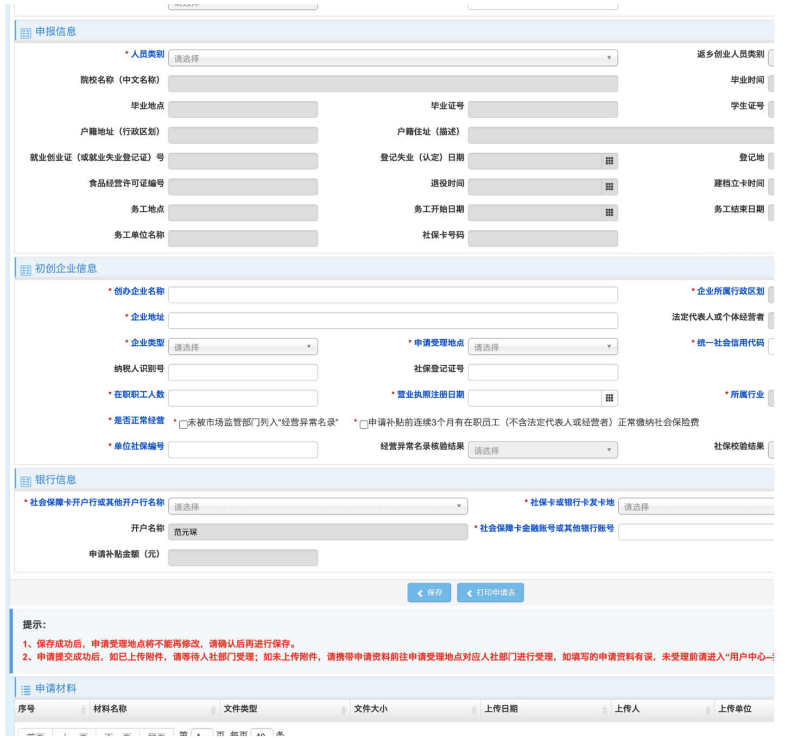

无需代理公司，自己申请创业补贴
最近遇到一些和我一样正在创业的朋友，对于创业来说，会遇到许多坑，所以会将自己在这个过程中遇到的一些事情，记录下来，给大家参考
如果需要申请创业补贴，请了解相关政策后再注册公司！！！
如果你毕业超过五年了，很大可能是以登记失业人员，申请创业补贴。相关政策会严格要求，你先登记为失业人员，再注册公司。如果时间顺序不符，会导致申请不成功。
申请条件
1.初创企业的法定代表人或经营者（女性不超过55周岁、男性不超过60周岁）符合以下条件之一：
（1）普通高等学校、中等职业学校、技工院校学生（在校及毕业5年内）和毕业5年内的出国（境）留学回国人员；
（2）军转干部、退役军人；
（3）登记失业人员、就业困难人员、本省脱贫人口；
（4）返乡创业人员，具体包括：
第一类：户籍地为广州、深圳、珠海、佛山、东莞、中山市，离开户籍所在地市外出求学（指在普通高等学校、中等职业学校、技工院校求学，下同）、务工后返回原户籍地所辖乡镇（行政区域中无乡镇的可适当调整）创业的劳动者（以营业执照所载地址为准）；
第二类：在第一项列举地区以外市所辖乡镇创业（不含创办个体工商户）的各类劳动者（有关地市可根据地方经济发展水平、资金承受能力等情况，自行确定是否将县城镇、中心镇除外）；
第三类：户籍地为第一项列举地区以外市，离开户籍所在地市外出求学、务工后返回原户籍地市辖区内创业的劳动者；
（5）创办驿道客栈、民宿、农家乐的人员。
办理条件说明
https://www.gdhrss.gov.cn/gdjycy/ggfw/app/btbszn/100401.html
在线申请地址
https://www.gdhrss.gov.cn/gdjycy/ggfw/app/index.html#/ggfw/qybsxq

如果对政策不熟悉，可以拨打 12333 咨询，找到你所以在街道的人力资源社会保证部门的电话，会有专业的人员帮助解答你的问题。少走弯路。